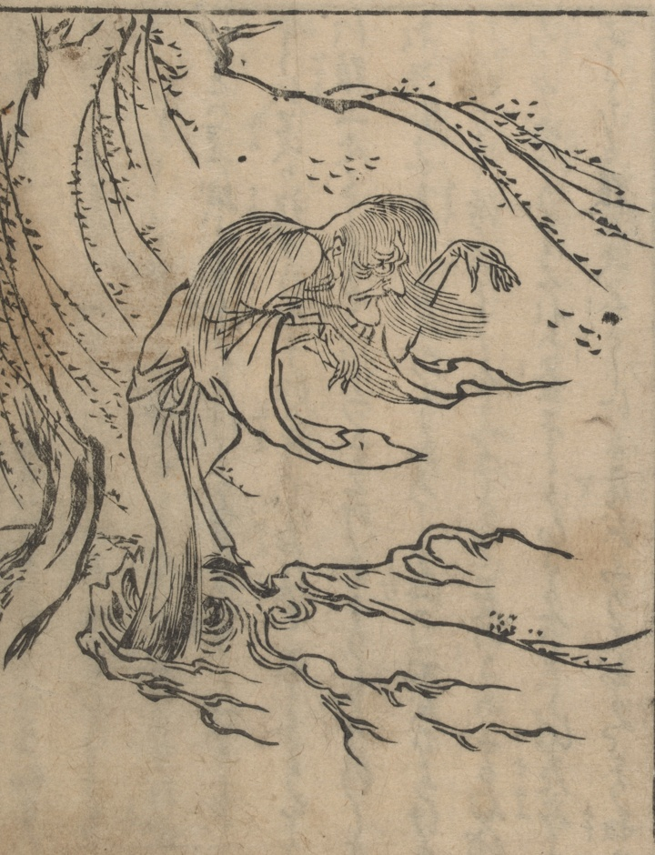

姥；ウバ，老女；ロウジョ，火の玉；ヒノタマ

火の玉の中から出てきた姥。髪は長く、腕を前に垂らし、白装束を着ている。
著作者：禿箒子著，橘岷江画／出典：親書誌：U426_nichibunken_0469：怪談國土産；カイダンクニミヤゲ／日付：2025／資源識別子：U426_nichibunken_0469_0004_0000
Copyright (c)2010- International Research Center for Japanese Studies, Kyoto, Japan. All rights reserved.